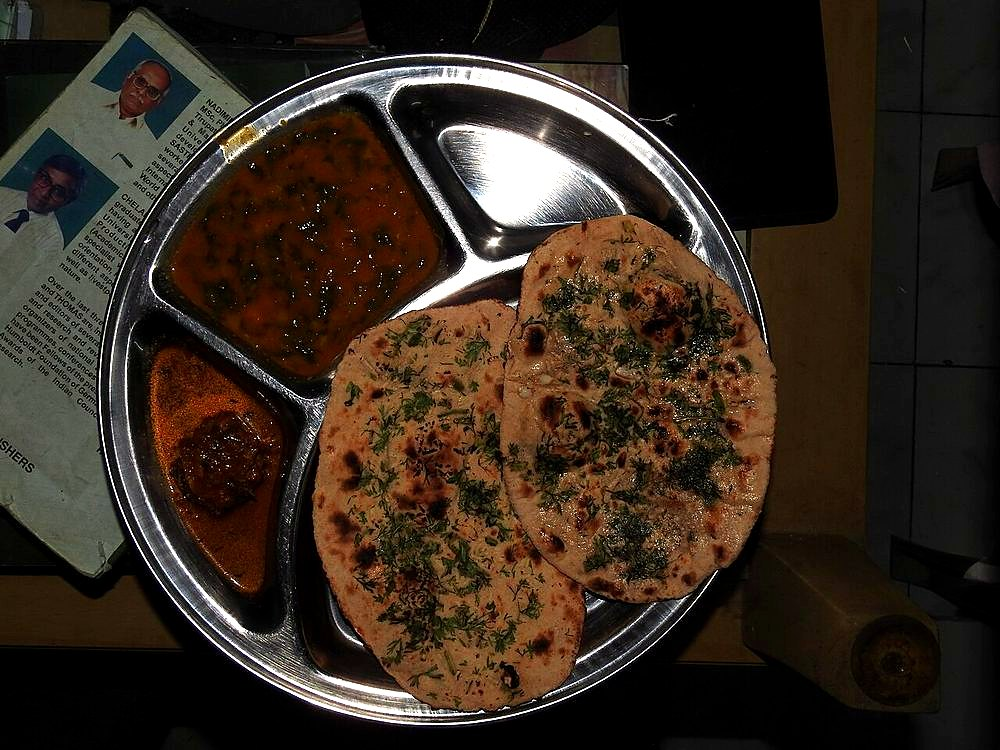

Prep20 min
Cook20 min
Active40 min
Plus2 hr resting
Serves6
Difficultymoderate
Contains: milk, gluten
Ingredients
Quantities for 6.
- 400g Maida
- 120g Yogurt
- 150ml, warm Milk
- 8 cloves, very finely chopped Garlicchopped, not crushed: crushed garlic burns
- a large handful, chopped Coriander Leaves
- 1/2 tsp Baking Soda
- 1 tsp Enooptional
- 1 tsp Sugar
- 3 tbsp, for brushing Ghee
- 1 tsp Salt
Cookware
oven, tawa
Checked against the ingredient list for ten allergens: milk, egg, fish, crustaceans, tree nuts, peanuts, sesame, mustard, soy and gluten. Brands vary, so read the label on anything new to you.
Before you start
- The garlic goes on raw and is pressed into the rolled dough, so it cooks in contact with the bread rather than in the pan.
- Chop the garlic rather than crushing it. Crushed garlic weeps and scorches on the tawa.
Method
- Make the naan dough: flour, salt, sugar, baking soda and eno, brought together with yogurt and warm milk into a soft, slightly sticky dough.
- Knead 8 minutes, oil, cover and rest 2 hours.
- Divide into 6 and roll each into a teardrop about 5mm thick.
- Scatter the chopped garlic and coriander over the top and roll once more, lightly, to press them in.Press them in or they fall off in the pan and burn on the metal.
- Wet the plain underside, slap onto a screaming-hot tawa, and cook until bubbles rise.
- Invert over a flame to blister the garlic side, 30 seconds, watching that the garlic colours but does not blacken.
- Brush generously with ghee and serve at once.
Storage
Best straight off the heat. Keeps a day wrapped in a cloth; the garlic dulls quickly, so these are worth making to order.
Nutrition Good estimate
Low protein: 9 g a serving, 10% of the calories
| Per serving125 g | Per 100 g | |
|---|---|---|
| Calories | 335 kcal | 270 kcal |
| Protein | 8.6 g | 7 g |
| Carbohydrate | 55.1 g | 44 g |
| of which sugars | 3.2 g | 2 g |
| Fibre | 1.9 g | 2 g |
| Fat | 8.5 g | 7 g |
| of which saturated | 5.0 g | 4 g |
| of which unsaturated | 2.9 g | 2 g |
Estimated from raw ingredients using USDA FoodData Central.
More like this: Vegetarian Indian recipes · Punjabi recipes
Times, yields, allergens and nutrition are guidance. Use your own judgement on doneness and on storing. More in About.